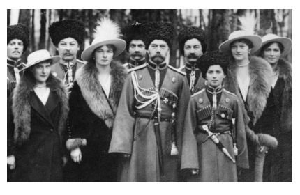

O MUNDO SOBRE TENSÃO: ASPECTOS DA EXPANSÃO IMPERIALISTA, E O ESTADO DE BELIGERÂNCIA NO CONTURBADO CENÁRIO INTERNO EUROPEU.
A primeira metade do século XIX foi um período de grandes contestações a ordem social e política que agitou o cenário interno europeu. Entre os anos de 1820 e 1848 movimentos ligados ao nacionalismo, ao liberalismo e também ao socialismo agitaram bandeiras em nome de ideologias que se colocavam a questionar e pedir o fim do Antigo Regime ou dos seus resquícios em solo europeu. Foi ainda um período de movimentação das fronteiras coloniais, onde as anexações de territórios na África. A Revolução na Rússia que pôs fim ao regime czarista introduziu uma nova ordem política, tendo por base a ideologia socialista que sacudiu as monarquias do continente. Por outro lado, ganham força as ideias fascistas na Itália e o nazismo que em poucos anos conduziria Adolf Hitler ao governo alemão. Para a melhor compreensão deste capítulo, é importante que ao fazer a leitura você vá tentando responder as seguintes questões: Como se processaram os movimentos revolucionários ocorridos na Europa durante a primeira metade do século XIX? Qual o significado da expansão imperialista para as potências europeias e os territórios sob a seu domínio na África e na Ásia? Quais os motivos que levaram a I Guerra Mundial e quais foram as consequências ao término do conflito? Qual o significado da Revolução russa para a geopolítica europeia do período? O que foram e como se caracterizaram os regimes totalitários na Alemanha e Itália?
Contextualizando
Entre os anos de 1820 e 1848, diversos povos lutaram pela sua liberdade tanto na Europa como na América. A luta pelo fim do Antigo Regime teve como pano de fundo o liberalismo e o nacionalismo, e posteriormente os ideais socialistas.
Neste período a burguesia passa a ser vista como defensora de políticas econômicas conservadoras, opondo-a aos setores populares. O nacionalismo foi uma das estratégias adotadas para controlar as massas, evitando que se organizassem grupos considerados radicais, capazes de abalar a ordem social vigente.
CONSTRUINDO CONHECIMENTOS
Nas décadas de 1820 e 1830 tomam curso os movimentos revolucionários que culminaram com a ascensão de políticos identificados com o movimento constitucional e o liberalismo, como é o caso de Luís Filipe na França conhecido como o "rei burguês".
A partir da segunda metade do século XIX intensifica-se o movimento de expansão das nações europeias sobre os povos dos continentes africano, asiático e americano. Trata-se do que se convencionou chamar do Imperialismo ou neocolonialismo, prática tipicamente desenvolvida pelas nações poderosas procurando ampliar e manter o controle ou a influência sobre povos considerados mais fracos.
Na África foram utilizadas forças militares na conquista e manutenção dos territórios, submetendo os povos africanos ao controle político e econômico europeu, retirando suas matérias primas e demais riquezas, utilizando-se da mão de obra local, muitas vezes sob o regime de escravidão, e exportando seus produtos industrializados.
A África foi dividida em diversos Estados sob o controle de potências europeias como Grã Bretanha, França, Portugal, Alemanha e Bélgica. As fronteiras destes Estados foram demarcadas de forma arbitrária, sem qualquer respeito a história e a cultura das populações locais.
Este modelo de partilha colonial destruiu o padrão econômico e cultural dos povos africanos que se viram submetidos aos interesses do capitalismo desenfreado praticado pelas nações metropolitanas que auferiam todos os benefícios desta exploração.
Na Ásia a ação imperialista dos europeus conquistou e colonizou diversas regiões, trazendo consequências nefastas as populações locais. Contudo, culturas seculares como a China e a índia resistiram através da manutenção de seus hábitos culturais mesmo durante o período em que estiveram sob o domínio das potências europeias.
A exploração das riquezas e o desrespeito as culturas, causou problemas políticos e sociais que até nos dias de hoje podem ser vistos.
Na época em que se desenvolve a expansão do imperialismo os países da América já eram em sua maioria nações independentes, ou seja, já não eram mais colônias de outras nações europeias. Foi pensando na impossibilidade de exercerem seu domínio de forma explícita sobre estes países que os Estados europeus passaram a agir de forma indireta, através de acordos e empréstimos. Além disso, no final do século XIX os Estados Unidos da América passam a exercer o controle de algumas regiões situadas no pacífico, de forma direta e indireta.
Um dos desdobramentos da política imperialista das potências europeias foi a Grande Guerra Mundial, chamada também de I Guerra Mundial, entre os anos de 1914 e 1918, e que envolveu os países europeus e também de outros continentes num confronte sem precedentes na história. Nesta época os países europeus viviam sob forte influência das ideias nacionalistas, situação esta gerada muito em função do expansionismo que tomou fôlego a partir da metade do século XIX.
Se pegarmos o caso da Alemanha, veremos que sua unificação com a Prússia teve como pano de fundo a antiga rivalidade com a França, afinal, a Guerra Franco-Prussiana ocorrida entre os anos de 1870 e 1871, deixara marcas indeléveis em ambos os Estados. Existiam ainda blocos nacionalistas como foi o caso do Pangermanismo (nacionalismo germânico, comandado pela Alemanha e pela Áustria) que aumentavam as tensões em regiões como a dos Bálcãs, considerada de grande interesse tanto pelos germânicos como pelos eslavos.
A Alemanha apoiava o Império Austro-húngaro em suas pretensões sobre a região. Juntamente com a Áustria-Hungria e Itália criou uma aliança político-militar chamada de Tríplice Aliança. Do outro lado da disputa, a Rússia alia-se à França e à Inglaterra numa aliança de apoio político-militar conhecida com a Tríplice Entente. Estava formado o cenário de grande tensão entre os países europeus que passaram a viver na iminência de um conflito de grandes proporções envolvendo praticamente todo o continente.
No dia 28 de janeiro de 1914, na capital da Bósnia, cidade de Sarajevo, temos o estopim que deu início ao conflito. Trata-se do assassinato do herdeiro do trono da Áustria-Hungria, arquiduque Francisco Ferdinando, por sérvio que militava em uma frente contrária a causa austro-húngara. A declaração da guerra foi feita pela Alemanha em julho de 1914, e logo formaram-se as alianças que entraram em confronto armado.
Na Primeira Guerra Mundial foram utilizadas armas de alto poder destrutivo, como bombas, aviões, tanques, rifles de precisão e metralhadoras, além da guerra de posição feita por trincheiras. Também, foram utilizadas armas químicas, gases que provocavam a morte por asfixia.
A derrota da Alemanha é o marco que pôs fim a guerra. A assinatura do Tratado de Versalhes em junho de 1919 foi considerado pela Alemanha como uma imposição que onerava o Estado ao ponto de impedir a sua reconstrução. Criava-se ali o um terreno fértil para a difusão de ideias capazes de unificar o país em nome de uma nova realidade de crescimento e prosperidade. É neste cenário que a figura de Adolf Hitler e do Partido Nacional Socialista dos Trabalhadores Alemães, ou simplesmente Partido Nazista, ganham notoriedade.
 Mas antes de falarmos sobre eles, é importante lembrarmos que a saída da Rússia do conflito no ano de 1917, deu lugar a uma série de disputas internas que culminaram com o fim da dinastia dos Romanov que governava o país, dando início a revolução comunista que instaurou um novo governo com características completamente diferentes de tudo aquilo que até então se havia visto em solo europeu, alterando por completo o desenvolvimento econômico, social e político do país. Dinastia Romanov. A centro o czar Nicolau II, Imperador da Rússia
http://ahistoriacomoelafoi.blogfolha.uol.com.br/files/2017/03/Nicholas_II_and_children_with_Cossacks_of_the_Guard_cropped.jpg
O envolvimento da Rússia na I Guerra Mundial foi recebido num primeiro momento como uma alternativa de unificar a população e voltar a exibir no cenário interno a força política do czar. Contudo, as grandes dificuldades encontradas neste período fizeram com que a situação só piorasse ao ponto do país sair do conflito imerso em uma guerra civil que durou de 1918 a 1921.
A partir deste momento o Estado soviético passou a desenvolver um modelo de sociedade onde ele detinha cada vez mais o controle o e poder sobre a propriedade dos meios de produção. Enquanto isso na Itália, o movimento fascista liderado pelo líder político Benito Mussolini ganha terreno no pós-guerra. Com o termino da Primeira Guerra Mundial pairava sobre a Itália um sentimento de medo em relação ao futuro da política e da economia no país. É neste cenário que Mussolini disseminou suas ideias Fascistas.
Tratava-se de um novo sistema político e econômico, completamente diferente daquilo que o país conhecera até então, combinando elementos do corporativismo, do totalitarismo, do nacionalismo e do anticomunismo, unificando todas as classes sociais em um único sistema que desse conta de um programa capaz de retirar a Itália da penúria por que passava após o término da guerra.
Somente no final da II Guerra Mundial é que Mussolini deixaria o poder, executado por guerrilheiros que lutavam pelo fim desse sistema que deixou um saldo de mortes e destruição por todo o país.
Na Alemanha, o Partido nazista de Adolf Hitler ganha terreno na década de 1920. Submetida ao termino da I Guerra Mundial pelo Tratado de Versalhes a pagamentos astronômicos a título de restituição das perdas causadas pela guerra aos países que venceram o conflito, a população alemã viu deteriorar-se os alicerces econômico, social e cultural do país.
O Nazismo se articulou dentro da República alemã num momento delicado em que os investimentos estrangeiros se escasseiam no país por conta da crise ocasionada pela quebra da bolsa de valores de Nova Iorque em 1929.
Hitler tornou-se o chanceler do país, cargo abaixo apenas do presidente, com a morte do presidente Hindenburg, em 1934, Hitler tornou-se o – líder supremo da Alemanha.
Nesse governo era pregada a superioridade do homem branco germânico, da raça ariana, e a necessidade da ampliação das fronteiras alemãs a fim de ser garantido o que se chamava do “espaço vital” necessário à construção do império (Tais propostas foram descritas por Hitler no seu livro Mein Kampf).
O resultado deste discurso foi a criação de um contexto bélico que colocou os alemães e o mundo num segundo conflito mundial. Estavam lançadas as bases da II Guerra Mundial que teria proporções maiores do que a primeira, sendo até os dias de hoje lembrada pela barbárie dos combates e dos campos de extermínio.
AÇÃO E REFLEXÃO
Faça uma pesquisa sobre os principais elementos culturais que marcaram a Belle Époque, destacando o que foi, quando ocorreu e porquê recebe este nome. Busque informações que expliquem de que forma eles influenciaram a sociedade e a cultura brasileira daquele período.
O QUE APRENDI
Ao término deste capítulo você aprendeu que a primeira metade do século XIX foi um período de grandes contestações à ordem social e política europeia, agitando o cenário interno europeu. Viu também que entre os anos de 1820 e 1848 os movimentos ligados ao nacionalismo, ao liberalismo e também ao socialismo agitaram bandeiras em nome de ideologias que se colocavam a questionar e pedir o fim do Antigo Regime ou dos seus resquícios em solo europeu. Foi ainda um período de movimentação das fronteiras coloniais, onde as anexações de territórios na África e na Ásia buscavam garantir o desenvolvimento das grandes potências europeias. Você pode perceber que o conturbado cenário geopolítico daquela época desencadeou conflitos que culminaram na I Guerra Mundial, a primeira grande guerra envolvendo praticamente todos os países europeus e as suas respectivas colônias. Ao seu término desenrola-se a Revolução na Rússia que pôs fim ao regime czarista introduziu uma nova ordem política, tendo por base a ideologia socialista que sacudiu as monarquias do continente. Finalmente, você viu que ganharam força as ideias fascistas na Itália e o nazismo que em poucos anos conduziria Adolf Hitler ao governo alemão.